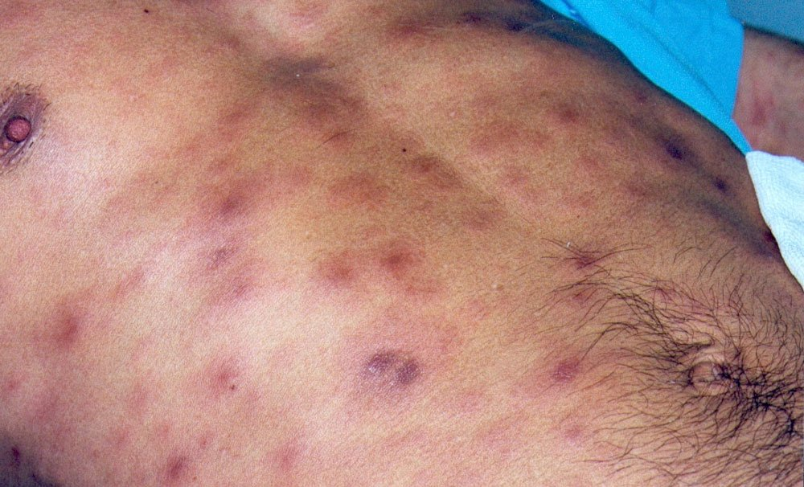
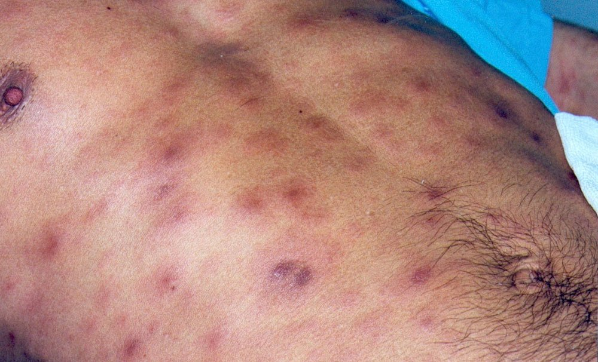

La Syphilis Secondaire.
La période secondaire se manifeste deux mois plus tard, s'il n'y a pas eu de traitement. S'il y a eu un traitement mal conduit, on peut voir apparaÎtre cette syphilis secondaire jusqu'à deux ans après le premier contact. Elle correspond à la diffusion du tréponème dans l'ensemble de l'organisme, et les lésions qu'elle provoque sont contagieuses. La syphilis secondaire provoque essentiellement une éruption cutanée, appelée la roséole. Celle-ci se manifeste par de petites taches rouges de 5 à 6 millimètres de diamètre, séparées les unes des autres. Elles ne démangent pas et disparaissent spontanément en un ou deux mois. Cette syphilis peut également se manifester par une atteinte des muqueuses, (angine ou laryngite), ou encore par une plaque d'alopécie, perte localisée de cheveux. Toute perte de cheveux de cause inconnue chez un individu jeune doit faire suspecter la syphilis. Plus tardivement, la syphilis secondaire peut entraÎner des lésions cutanées que l'on appelle des syphilides. Il s'agit de lésions populaires (index, Papule), souvent squameuses (index, Desquamation), pouvant ressembler à une dermite séborrhéique ou encore à des verrues, souvent de volume important. Ces lésions peuvent siéger n'importe où sur la peau, mais elles sont plus fréquentes dans la région génitale ou autour de l'anus. On peut aussi rencontrer de nombreuses maladies qui feront penser à une syphilis, comme des ganglions diffus, une maladie rénale (index, Néphron-urologie), une hépatite, une maladie osseuse ou articulaire (index, Rhumatologie), ou encore nerveuse. On peut ainsi observer une méningite, chez les malades atteints du sida.
LA PHASE DE LATENCE.
Si la maladie passe inaperçue au cours des deux stades précédents, ce qui est relativement fréquent, on entre dans la phase de latence. Les seuls signes de syphilis sont alors sérologiques, c'est-à-dire qu'on ne peut les détecter qu'avec une prise de sang. Le diagnostic est fait dans la plupart des cas lors d'un bilan systématique (bilan prénuptial, prénatal, professionnel, etc.).
 
